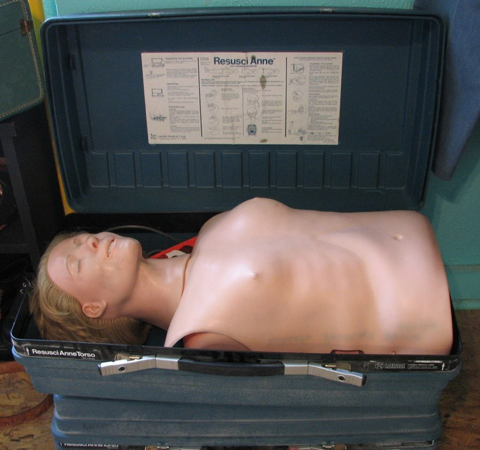

Медициналық дайындық Medical Training Медицинская подготовка
Жүрек тоқтағанда — тез әрекет ету мен дұрыс жүрек массажы өмірді сақтайды. On cardiac arrest — fast action and correct chest compressions save a life. При остановке сердца — быстрые действия и правильный массаж спасают жизнь.

Жүрек-өкпе реанимациясы (ЖӨР) — жүрек қызметі мен тыныс кенеттен тоқтағанда өмірлік маңызды мүшелерге қанмен оттегі жеткізуді жасанды түрде сақтап тұратын кезек шұғыл шаралар жиынтығы. Негізі — кеуде қысымдары (жасанды қан айналымы) мен жасанды тыныс. ЖӨР-ді дереу, белгілерді тапқан сәтте бастау керек: толық қан айналымы тоқтаған соң ми қыртысы оттегінсіз 4–6 минутта қайтымсыз зақымданады. Әр кешіктірілген минут аман қалу мүмкіндігін 7–10%-ға азайтады. Cardiopulmonary resuscitation (CPR) is a set of emergency measures that artificially maintain the delivery of oxygenated blood to vital organs when the heart and breathing suddenly stop. Its core elements are chest compressions (artificial circulation) and rescue breaths. CPR must begin immediately, the moment the signs are recognised: once circulation stops, the brain cortex sustains irreversible damage within 4–6 minutes without oxygen. Each minute of delay lowers the chance of survival by about 7–10%. Сердечно-лёгочная реанимация (СЛР) — комплекс неотложных мер, искусственно поддерживающих доставку насыщенной кислородом крови к жизненно важным органам при внезапной остановке сердца и дыхания. Её основу составляют компрессии грудной клетки (искусственное кровообращение) и искусственное дыхание. Начинать СЛР нужно немедленно, как только распознаны признаки: без кровотока кора головного мозга получает необратимые повреждения уже через 4–6 минут. Каждая минута промедления снижает шанс выжить примерно на 7–10%.
Жүрек тоқтағанын 10 секундтан аспайтын жылдам тексеру арқылы анықтайды. Шешуші үш белгі — сананың, тыныстың және тамыр соғуының жоқтығы. Cardiac arrest is confirmed by a rapid check lasting no more than 10 seconds. The three decisive signs are absence of consciousness, breathing and pulse. Остановку сердца устанавливают быстрой проверкой не дольше 10 секунд. Три решающих признака — отсутствие сознания, дыхания и пульса.
| ПараметрParameterПараметр | Ересек адамға арналған мәніValue (adult)Значение (для взрослого) |
|---|---|
| ОрныHand positionМесто | кеуде сүйегінің (төс) ортасы, алақанның негізіcentre of the sternum, heel of the handцентр грудины, основание ладони |
| ТереңдігіDepthГлубина | 5–6 см (кеуде биіктігінің ≈ 1/3)5–6 cm (≈ 1/3 of chest depth)5–6 см (≈ 1/3 высоты грудной клетки) |
| ЖиілігіRateЧастота | минутына 100–120100–120 per minute100–120 в минуту |
| Қысым : тынысCompressions : breathsКомпрессии : вдохи | 30 : 2 |
| ҚолдарArmsРуки | тізеден тік, шынтақта бүгілмейді, иық қол үстіндеstraight, elbows locked, shoulders over the handsпрямые, локти не сгибать, плечи над кистями |
| Кеуденің қайта көтерілуіChest recoilРасправление грудной клетки | әр қысымнан кейін толық қайта көтерілсінallow full recoil after each compressionполное расправление после каждой компрессии |
| ҮзілістерInterruptionsПаузы | барынша аз, 10 секундтан аспауminimal, under 10 secondsминимальные, не более 10 секунд |
| Тыныстың ұзақтығыBreath durationДлительность вдоха | ≈ 1 секунд, кеуде көтерілгенше≈ 1 second, until the chest rises≈ 1 секунда, до подъёма груди |
Басты шалқайтыңыз, иекті көтеріңіз, мұрынды саусақпен қысыңыз, ауызды тығыз қаусырыңыз. Кеуде көзге көрінетіндей көтерілгенше ≈ 1 секунд бір қалыпты дем шығарыңыз; артық қатты не тез үрлеуден аулақ болыңыз. Екі дем 5 секундтан аспауы тиіс. Аузға жанасу мүмкін болмаса немесе үйретілмесеңіз — тек үздіксіз қысым жасаңыз. Tilt the head back, lift the chin, pinch the nose, seal the mouth tightly. Blow steadily for ≈ 1 second until you see the chest rise; avoid blowing too hard or too fast. Two breaths should take under 5 seconds. If mouth contact is impossible or you are untrained — do compressions only. Запрокиньте голову, поднимите подбородок, зажмите нос, плотно обхватите рот. Выдыхайте ровно ≈ 1 секунду до видимого подъёма груди; не вдувайте слишком сильно или быстро. Два вдоха — менее 5 секунд. Если контакт с ртом невозможен или вы не обучены — выполняйте только компрессии.
Тіршілік белгілері пайда болдыSigns of life returnПоявились признаки жизни
қалыпты тыныс, қозғалыс, тамыр соғуы — зардап шегушіні бүйіріне (қалпына келтіру қалпы) аударыңызnormal breathing, movement, pulse — turn the victim into the recovery positionнормальное дыхание, движения, пульс — переведите в восстановительное положение
Маман көмек келдіProfessional help arrivesПрибыла квалифицированная помощь
жедел жәрдем не дәрігер реанимацияны өз қолына алдыthe ambulance or a doctor takes overскорая или врач берут реанимацию на себя
Күш таусылды немесе қауіп тудыExhaustion or new dangerИстощение сил или новая опасность
құтқарушы әбден шаршады немесе орын қауіпті болдыthe rescuer is exhausted or the scene becomes unsafeспасатель полностью истощён или место стало опасным